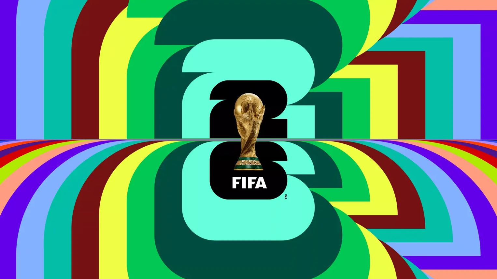

Galeria e Vídeos
Apresentação da Marca
A identidade visual da Copa do Mundo FIFA 2026 combina elementos vibrantes e multiculturais para refletir o caráter continental e inclusivo do torneio. O design usa cores fortes e contrastantes, inspiradas nas culturas dos três países-sede, além de uma linguagem gráfica moderna baseada em movimento, celebração e diversidade.
O emblema oficial destaca o troféu da Copa do Mundo integrado ao número “26”, criando uma marca simples e reconhecível. Pela primeira vez, cada cidade-sede também recebeu sua própria identidade visual personalizada, com variações gráficas que representam características locais, como arquitetura, música, arte urbana e símbolos culturais.
A proposta visual busca transmitir uma Copa mais expansiva, jovem e conectada, alinhada ao fato de que será a primeira edição com 48 seleções e partidas espalhadas por toda a América do Norte.
